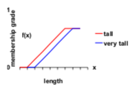
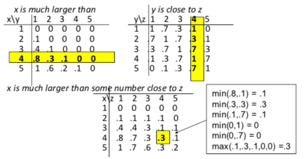
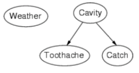

Probability and Uncertainty
one often has to deal with info that is underspecified, incomplete, vague, etc.
logic by itself is not sufficient for these problems.
Vagueness: Fuzzy Set Theory
model theory often based on set theory
fuzzy set theory allows something to be to some degree an element of a set
dominant approach to vagueness (mostly because wtf else can you do)
Fuzzy sets
-
universe U, object x ∈ U
-
membership function for fuzzy set A is defined to be function \(f_A\) from U to [0,1]:
-
\(f_A(x)=y\): x is a member of A to degree y
-
\(f_A(x)=1\): x is certainly member of A
-
\(f_A(x)=0\): x is certainly not a member of A
-
\({x | f_A(x)>0}\): support of A
modifiers (hedges)

operations on fuzzy sets:
-
complement: \(f_{\sim{A}}(x)=1-f_A(x)\)
-
union: \(f_{A\cup B}(x)=\max(f_A(x),f_B(x))\)
-
intersection: \(f_{A\cap B}(x)=\min(f_A(x), f_B(x))\)
-
subset: \(A\subset B \iff \forall{x}(f_A(x)\leq f_B(x))\)
semantics -- multivalued fuzzy logic
-
v(¬ A) = 1-v(A)
-
v(A ∨ B) = max(v(A), v(B))
-
v(A ∧ B) = min(v(A), v(B))
-
v(A → B) = min(1, 1 - v(A) + v(B))
Fuzzy relations
fuzzy sets can denote fuzzy relations between objects. e.g. approximately equal, close to, much larger than, etc.
fuzzy composition:
\(f_{R \circ S} (\langle x,z\rangle ) = \max_{y \in Y} \min(f_R (\langle x,y\rangle ), f_S (\langle y,z\rangle ))\)
hands-on example:

Evaluation
-
good -- flexible, coincides with classical set theory, sever successful applications of fuzzy control
-
bad -- requires many arbitrary choices, tends to blur differences between probabilistic uncertainty/ambiguity/vagueness
Uncertainties: Probability Theory
General
main interpretations of probability theory:
-
optivist (frequentist) probability
-
frequentism: probability is only property of repeated experiments
-
probability of event: limit of relative frequency of occurrence of event, as number of repetitions goes to infinity
-
subjective probability
-
Bayesianism: probability is an expression of our uncertainty and beliefs
-
probability of event: degree of belief of idealized rational individual
sample space Ω: set of single outcomes of experiment
event space E: things that have probability (subsets of sample space). if sample space is finite, event space is usually power set.
Axioms of probability
for any event A, B:
-
\(0 \leq P(A) \leq 1\)
-
\(P(\Omega) = 1\)
-
\(P(A \cup B) = P(A) + P(B) - P(A \cap B)\)
can derive:
-
\(P({}) = 0\)
-
\(P(\Omega) = 1\)
-
\(\text{if} A \subset B, P(A) \leq P(B)\)
conditional probability ("A given B"):
\(P(A|B) = \frac{P(A \cap B)}{P(B)}\)
Joint probability distributions
for a set of random variables, it gives probability of every atomic even on those random variables.
e.g. P(Toothache, Catch, Cavity):
|
|
toothache
|
¬ toothache
|
|
|
catch
|
¬ catch
|
catch
|
¬ catch
|
|
cavity
|
0.108
|
0.012
|
0.072
|
0.008
|
|
¬ cavity
|
0.015
|
0.064
|
0.144
|
0.576
|
inference by enumeration:
-
for any proposition Φ, sum atomic events where it's true -- \(P(\Phi) = \sum_{\omega : \omega \models \Phi} P(\omega)\)
-
compute conditional probability by selecting cells -- e.g. for P(¬ cavity | toothache), select toothache column and (¬ cavity) cells
use Bayes' rule for opposite conditionals (like finding P(disease | symptom) from P(symptom | disease))
Bayesian networks
simple graphical notation for
-
conditional independence assertions
-
compact specification of full joint distributions
syntax:
-
set of nodes, one per variable
-
directed acyclic graph, with a link meaning "directly influences"
-
conditional distribution for each node given its parents -- \(P(X_i | Parents(X_i))\)
topology example:

what does it mean?
-
weather is independent of other variables
-
toothache and catch are conditionally independent given cavity.
Evaluation of probabilities
-
good -- sound theoretical basis, can be extended to decision-making, some good tools available
-
bad -- not always computationally easy, need lots of data which may be hard to get